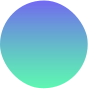

Estate Inspect company is the premier tech-Driven Inspection service company in Africa and the First Gig-economy driven property inspection company in the world.
Research, wireframes, prototypes, UI Design, User flows, UI/UX Designer
Andriod & iOS
2 Weeks
Housing/ Estate
Project Overview
Nearly 62 million nigerians are facing various housing search challenges which includes; housing documentation process, poor quality houses, dilapidated condition of houses, inadequate implementation of planning policies, lack of enlightenment. User’s usually have the challenge of validating the authenticity of housing when seekngto purchase or rent a property and due to lack of updated information they fall victim of illegal buildings, poor qulity houses, and dilapidated condition of houses. Though some listing site put up these houses with the details, most property listing platforms don’t verify the housing details as regards it’s current state and don’t provide up-to-date information about the housing environment.
My role is to design the website to which allows users to request information about a property. I conducted user interviews, user research survey, UX Audits, information architecture, and digital wireframes, low and high fedelity protoytying, conducting usability studies, iterating on designs, defining UX metrices, defining busniess KPI.
Figma
Google Forms

Figjam

Google sheets

Whatsapp Video call
After Effects

Adobe Encoder
Validation
The users find it difficult to verify the authenticity of housing property or outlet they want to purchase on property listing platforms. So the redesign is center around improving the existing site and solving the problem of house fraud.
Project Vision / Goal Statement.
The goal is to have a redesigned website which let users request inspection service to help them inspect their potential dream house or shortlet or estate. which will affect how users purchase or rent houses, by giving them the ability to get the detailed information of the house to be bought or rented.
We will measure effectiveness by analizing the number of users satisfied with tht service.
What we did
Here’s an overview of the design process used to improve the existing design and experince and also factoring the new features into the new website. I started with researching the problems users may face and interviewing the stackholder on why a redesign is essental, then I defined solutions concepts, creating user designs, and creating an interactive prototype.

Project Vision / Goal Statement
I learned alot about problems during thr research and found that users have similar behavoius and pain poinsts. Organizing everything helped me narrow it down to some points, from which I creaete a list of features that can help users.
87.5%
Participants prefer using dumping your wastes in waste banks to doorstep waste collection.

62.5%
Participants would like to know where their waste ends.
100%
Participants haven’t heard of any waste managment platform.
Here are the expected mood statments to consider when design the website, user want these moods when interacting with the website.
 Involvement
Imagery & vidoes
Colourful
Trendy
Trust
Intuitive navigation
Clean
Minimal / Simple
Bright
Mordern
Optimistic
Relatable
House Seekers
Housing agents
Listing sites
This process was done to identify the user expereice issues that the current website has refactoring them into the new website to be designed.
One of the UX issue here is the ux copy in the CTA, it doesn’t inform the users on what action they want to perform. The ux copy should focus more on the important action users will take such as “Request Inspection” or “Get Started”. Also, the CTA leads to the contact page.